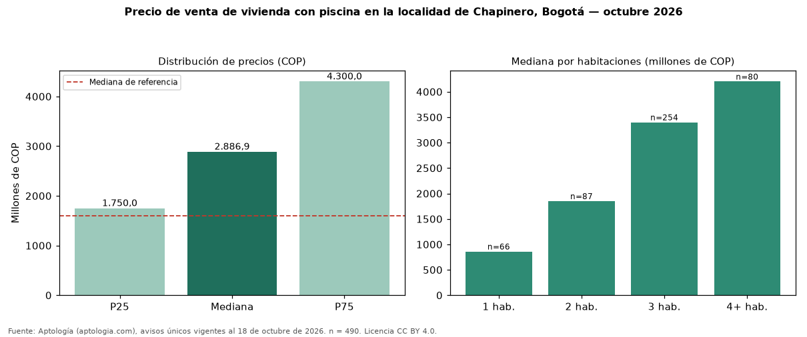

Precio de venta de vivienda con piscina en la localidad de Chapinero, Bogotá — octubre 2026
Con 490 avisos únicos, el precio mediano de vivienda con piscina en venta en la localidad de Chapinero, Bogotá es COP 2,89 mil millones. Frente a toda la oferta de venta en la localidad de Chapinero, Bogotá (COP 1,60 mil millones), la diferencia es de 80 % por encima. Frente a los avisos sin piscina del mismo grupo (COP 1,53 mil millones, n = 6036), la diferencia es de +89 %; por metro cuadrado, +47 %. En todo Bogotá, la misma combinación tiene mediana COP 1,15 mil millones (+151 %). Por metro cuadrado, la mediana es COP 13.238.095/m² (+45 % frente a COP 9.159.953/m²), puesto 1 de 11 localidades comparables. El rango intercuartílico va de COP 1,75 mil millones a COP 4,30 mil millones (razón 2,5). Cruzando con la oferta de arriendo equivalente, la rentabilidad bruta implícita es 7,3 % anual. Datos abiertos CC BY 4.0 de Aptología; fuente y búsqueda de inmuebles: https://www.aptologia.com/venta/bogota/chapinero. Archivos: PDF de 2 páginas, CSV con las cifras y gráfica PNG.

| Avisos únicos | 490 |
|---|---|
| Percentil 25 | COP 1.750.000.000 |
| Mediana | COP 2.886.913.500 |
| Percentil 75 | COP 4.300.000.000 |
| Mediana por m² | COP 13.238.095 |
Fuente: avisos vigentes de portales inmobiliarios recopilados por Aptología, deduplicados (mínimo 30 avisos únicos por celda). Precios pedidos, no cerrados. Fecha: 2026-10-18.